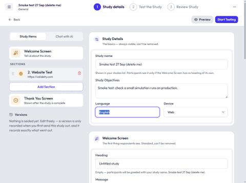
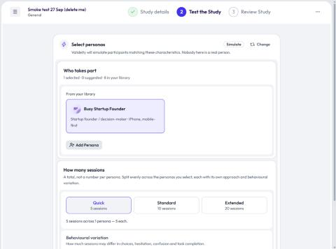
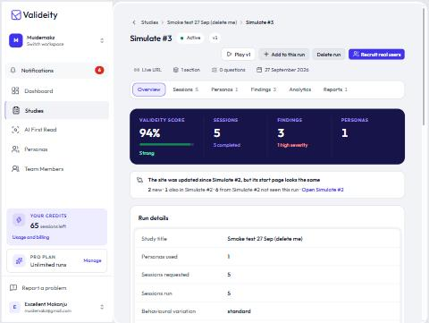
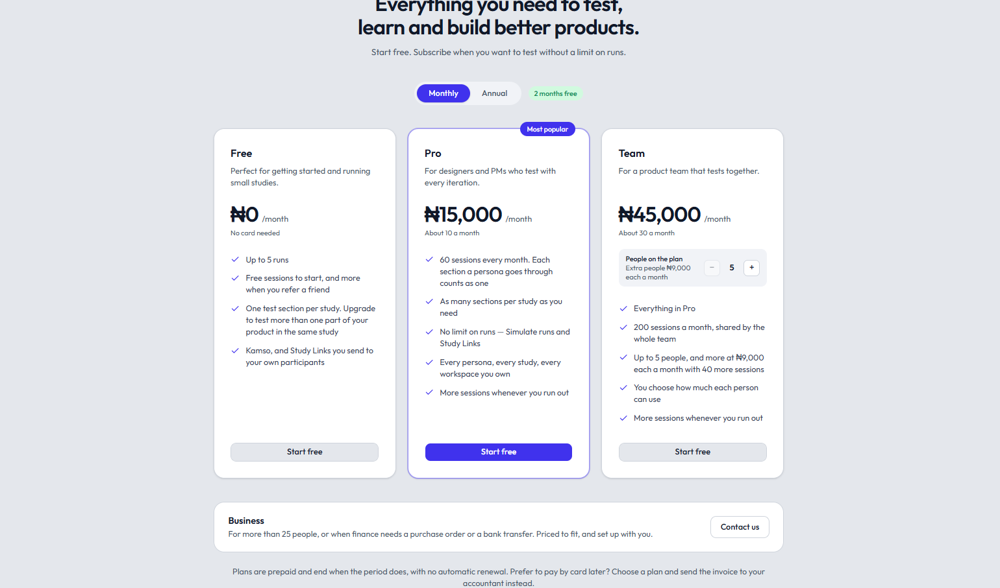
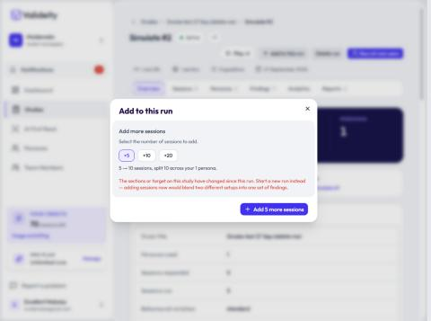

Valideity · Product Ownership & Building
Using Valideity To Fix Its Own Pricing Flow
I’m building Valideity, an AI-first UX research product. To test it on its own website, I asked a simple question: could a visitor find the Pro plan’s monthly price before creating an account?
Three simulated runs exposed a missing route, caught a fix that still sent visitors to login, and verified the working pricing path. The Predicted UX score moved from 53% to 94%.
Summary
Valideity lets a team test a prototype or live site with simulated personas, then run the study with real people. Building it means owning the product definition, interaction design and AI-assisted implementation, including how its interface distinguishes Predicted findings from Measured evidence.
On 27 September 2026, I used the product on its own public waitlist page. The task was “Find out how much the Pro plan costs a month.” Each run used the same task and one simulated persona, with five sessions per run. I reviewed the findings, changed the live experience, and tested again.
- Define the question. Test whether a potential buyer can discover pricing without an account.
- Inspect the behavior. Follow where the simulated sessions went and what stopped the task, alongside the headline score.
- Implement and verify. Fix the public pricing route, then check the actual signed-out experience and rerun the study.


The Problem
A visitor evaluating the product needed to know its price. The landing page offered a waitlist and login, but no clear route to the pricing page. The first run completed all five simulations, yet none completed the visitor’s task. A finished simulation was not the same as a successful user journey.
No Pricing Route
All five simulated sessions failed to find the Pro price and reached login instead.
A Fix That Still Blocked Access
New pricing links looked right but opened an in-app pricing control that redirected signed-out visitors to login.
Currency Still Needed Clarity
Once the route worked, the report caught an approximate dollar price with no explicit currency unit.
Three Runs, One Task
Run 1 · Predicted
53%
No pricing link. 0 of 5 simulated sessions completed the task.
Run 2 · Predicted
52%
Visible links still led to login. Task completion remained 0 of 5.
Run 3 · Predicted
94%
Public pricing route worked. 5 of 5 simulated sessions found the price.
- Run 1 identified the discovery problem. The findings showed sessions scanning the page, looking for plan information and ending up at login. The useful action was to expose Pricing in the navigation and near the sign-up area.
- Run 2 checked the implementation. “See plans and prices” was recognizable, but the route was wrong. The new links invoked the authenticated in-app pricing experience. Another completed test exposed a fix that had not solved the visitor’s problem.
- Run 3 checked the working public route. After the links opened the public pricing page directly, every simulated session found the price. The report still surfaced the unclear currency helper text.
The one-point change from 53% to 52% was not the important signal: both runs had zero task completion. What mattered was that the finding persisted until the underlying route actually worked.

The Fixes & Their Tradeoffs
Make Pricing Public, Not Just Visible
A correctly labelled link was insufficient. Its destination also had to work for a visitor who was evaluating the product before signing up. I corrected the links to open the public pricing page and verified them in a signed-out browser.

The remaining finding was specific: the Pro card showed a naira amount and “About 10 a month,” without stating the currency of that approximate amount. I clarified the helper text afterward. The 94% score belongs to the version before that wording change; I do not assign it a later, unrecorded score.
Preserve The Difference Between Versions
After the tested target changed, “Add to this run” refused to blend new sessions with the old run and required a new run instead. That boundary matters: a combined score would hide whether a finding came from before or after a fix.

Designing, Building & Using The Product
My fintech and B2B work has centred on making complex workflows understandable and reliable. With Valideity, I carry that judgment through product definition and working implementation. This test connected the research tool I was building to a decision on the product itself.
I use AI-assisted implementation, then inspect the resulting behavior. Here, a visible interface fix was not enough: the signed-out path had to work, the findings had to remain attached to the version that produced them, and the result had to be labelled as simulated evidence.
- Review AI suggestions before applying them. The study assistant proposes tasks and questions for the researcher to select.
- Keep the score grounded in the run. Application logic computes scores and supporting counts; AI helps phrase the findings.
- Keep Predicted and Measured distinct. Five simulated sessions are five simulations, not five real customers.
Outcome & Next Validation
The Predicted UX score rose from 53% to 94%, and simulated task completion moved from 0 of 5 to 5 of 5. More usefully, the sequence showed that findings could guide a change, expose a broken implementation of that change, and point to a remaining clarity issue after the main path worked.
Next: Check The Same Task With Real People
These results come from one simulated persona and five sessions per run on my own product. Real-participant testing of the final version is the next step for this case. A Measured result is not claimed here, and this experiment does not establish prediction accuracy or a conversion uplift.
Valideity remains an ongoing product with early access by invitation. This case shows a concrete loop from question to findings to implemented change and rerun, alongside my broader ownership of the product.
Related Work